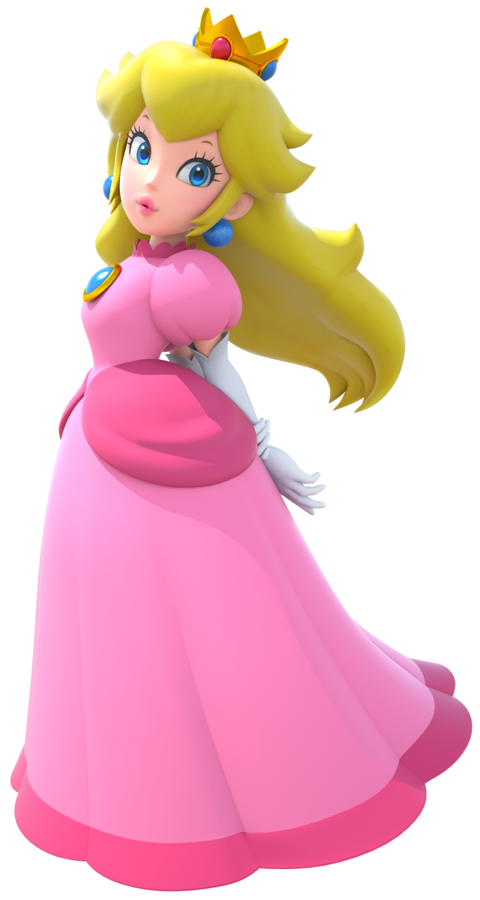
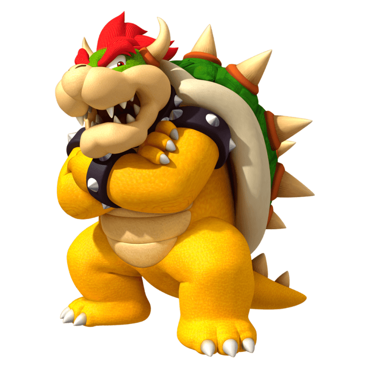

Meet all your favorite characters from the Mario Kart series!
 Mario: The all-around balanced racer, perfect for beginners.
Mario: The all-around balanced racer, perfect for beginners. Luigi: Similar to Mario, with a slight advantage in handling.
Luigi: Similar to Mario, with a slight advantage in handling.- Princess Peach: Known for her agility and speed, she's a top choice for those who love sharp turns.
- Bowser: Heavyweight and powerful, great for top speed once he gets going.
 Yoshi: Fast and light, Yoshi is excellent for quick boosts and easy maneuverability.
Yoshi: Fast and light, Yoshi is excellent for quick boosts and easy maneuverability.